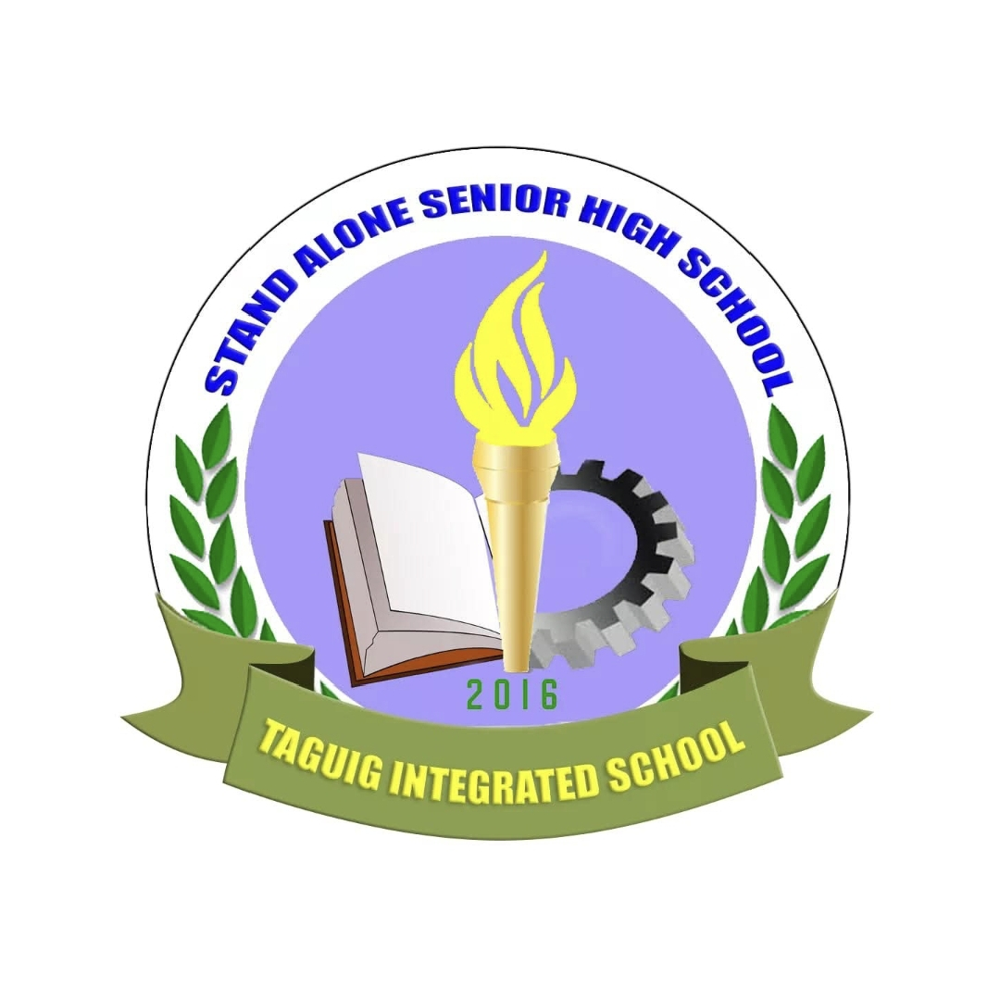
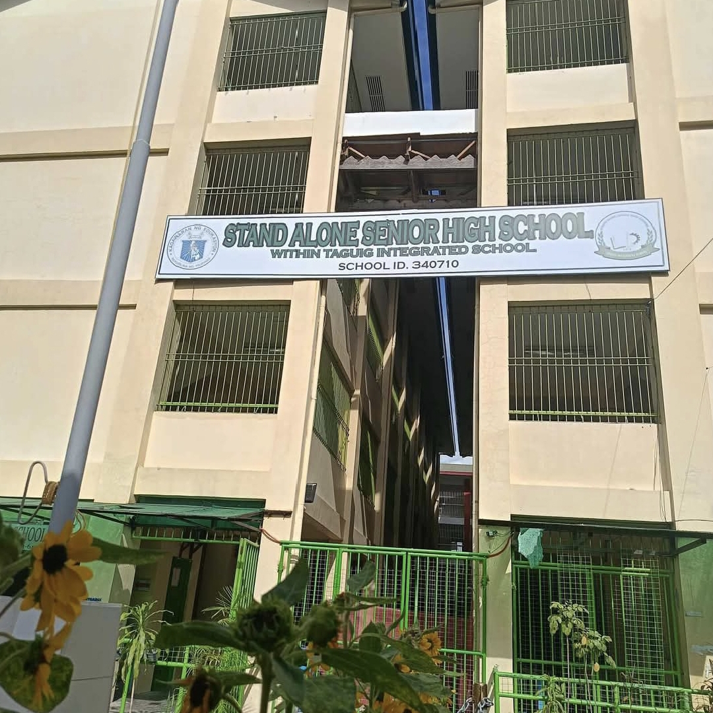

DESCRIPTION
The Stand Alone Senior High School (SHS) within Taguig Integrated School is a public senior high school (Grades 11 and 12) located on a separate site from the junior high school. It is a distinct institution with its own School Head, distinct from the Taguig Integrated School's junior high section. The school offers free education, including tuition, uniforms, and supplies.
Redrico Kurt M.
11-ICT INDUSTRY